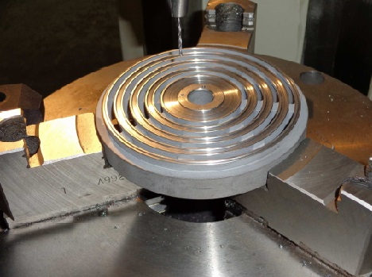

Cuando el estado del componente lo requiere, realizamos trabajos de fresado especializados para recuperar geometrías, paralelismos y superficies críticas sin comprometer las propiedades originales del material.

Este proceso garantiza estabilidad dimensional, correcta alineación y un desempeño óptimo del sistema de válvulas en operación continua.